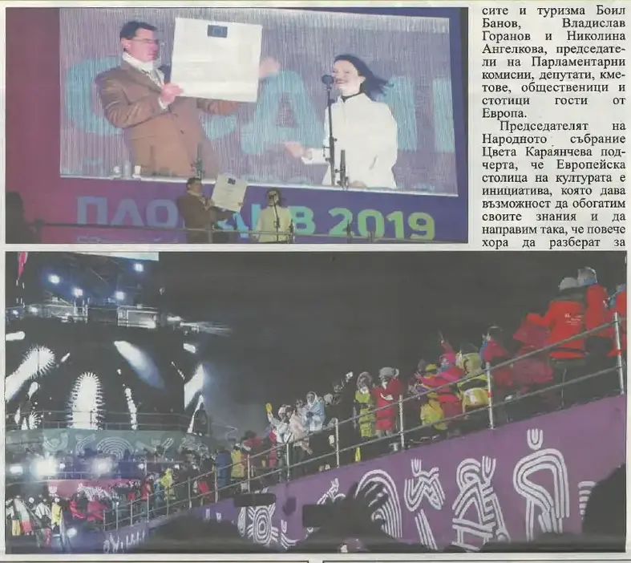
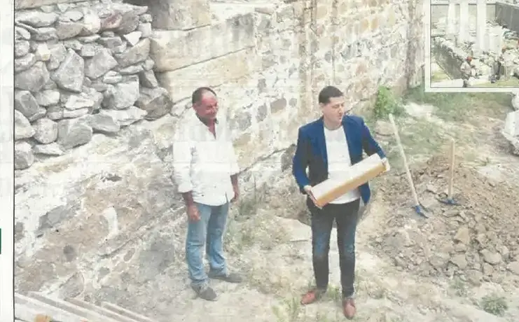

2019 — Годината на столицата
12 януари, мразовито и ветровито: 50 000 души дадоха началото. Останалото е история.
Трите акцента на годината · подбрани на ръка
1500 изпълнители, 40 000 публика. Началото на годината-връх.
подробностите — на мястото им →Новото сърце на града е на пешеходците. Строен за следващите 50 години; през юли в него легна и капсулата на времето.
подробностите — на мястото им →Премиерата, в залата — трима кметове на Пловдив. „При мен тези осем години бяха моят живот.“
подробностите — на мястото им →Хрониката на годината · месец по месец · 10 записа: 2 събития от вестника · 8 броя
Всичко на едно място, по реда на случването. Щракни албум — разгъва се тук, без да напускаш годината. Събитията от общинския вестник отварят страницата-източник в четеца. Записите от вестника са подбраните — кадрите и текстовете им предстои да бъдат подменени с по-добри, а някои ще се слеят с разказите по темите.

стр. 2От името на Европейската комисия еврокомисарят Мария Габриел връчи на кмета на Пловдив Иван Тотев почетния знак, присъждан като признание за отличната работа, извършена в подготовката на събитията през 2019-а. На церемонията присъстваха председателят на Народното събрание Цвета Караянчева, вицепрезидентът Илияна Йотова, министри, депутати, кметове и стотици гости от Европа.
брой 45 · стр. 2 — отвори страницата → 8 стр. · чети
8 стр. · четиЗАЕДНО – Пловдив е всички цветове! · Еврокомисар Мария Габриел: Гордея се с Пловдив! · Д-р Георги Крумов: Пловдив е столицата на българския тенис
кликни — броят се отваря в четеца · всички броеве са в секция „Вестникът“ → 8 стр. · чети
8 стр. · четиДетмаг се превръща в галерия бижу · Пловдив в Топ 10 за най-успешно място в света · Тина Димитрова: Гордея се с моя любим Пловдив!
кликни — броят се отваря в четеца · всички броеве са в секция „Вестникът“ → 8 стр. · чети
8 стр. · четиБулевардът в „Северен“ расте всеки ден, събират идеи за името му · ЕК: Инвестициите в „Пловдив 2019“ ще се върнат няколко пъти · Капитанът на „Локомотив“ Димитър Илиев: Пловдив има уникалния шанс да влезе в историята на световния футбол!
кликни — броят се отваря в четеца · всички броеве са в секция „Вестникът“ → 8 стр. · чети
8 стр. · четиПодлезът на Пощата готов, отпушва трафика в центъра · Президентът на Германия: Браво, Пловдив, това е пътят! · Заедно! Футболен Пловдив си иска градския стадион
кликни — броят се отваря в четеца · всички броеве са в секция „Вестникът“ → 8 стр. · чети
8 стр. · четиПловдив ще има уникален за страната площад · Николай Генов: Няма по-хубав и цветен град от Пловдив, а „Колодрума“ е истинско бижу · Бляскаво шоу в „Колодрума“
кликни — броят се отваря в четеца · всички броеве са в секция „Вестникът“ → 8 стр. · чети
8 стр. · четиНовият площад „Централен“ – музей на открито · Израелци се върнаха към корените си в Пловдив · Мартин Хорозов: Мои приятели от Гърция останаха изумени от красотата и чистотата на Пловдив
кликни — броят се отваря в четеца · всички броеве са в секция „Вестникът“ →
стр. 1Кметът Иван Тотев положи специална капсула на времето на площад „Централен“ до най-ранния строителен пласт на паметника от I век при Римския форум. „Завещавам Ви да пазите и обичате града ни, както ние го правим“, гласи личното послание на градоначалника към бъдещите поколения.
брой 51 · стр. 1 · и в брой 51, брой 52 — отвори страницата → 8 стр. · чети
8 стр. · четиПлощадът почти готов, дава представа какъв град е Пловдив · „Капана“ става пазител на архитектурното наследство · Галерия „Капана“ – най-новото място за култура в Пловдив
кликни — броят се отваря в четеца · всички броеве са в секция „Вестникът“ → 8 стр. · чети
8 стр. · четиИзложбена зала „2019“ – новото бижу на Пловдив · 528 публични събития от Европейска столица на културата · Първи интерактивен под в училище по общинската програма
кликни — броят се отваря в четеца · всички броеве са в секция „Вестникът“ →Общият отчет 2012–2019 · Филмът-отчет (43:28) — финалът на лентата — равносметката, непипната.